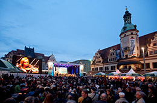
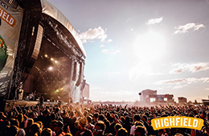
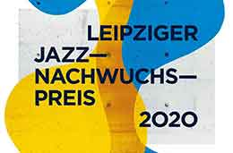

¡No te lo podes perder!
05/11 Bachfest Leipzig
Es el festival dedicado a la música clásica llamado Bachfest Leipzig. Thomaskirche, se convierte en el lugar principal para maravillosos conciertos de música con la participación de orquestas que interpretan obras clásicas

07/11 Wave-Gotik-Treffen
Es un festival anual de música y arte celebrado en Leipzig, Alemania. En él, tocan más de 150 bandas y artistas de diferentes géneros en varios puntos por toda la ciudad durante cuatro días en Pentecostés. El festival también alberga numerosas ferias con artículos medievales, góticos y culturales.
11/11 Highfield
Es el festival de rock indie más grande de Alemania del Este. Consta de tres días con conciertos en vivo de actos nacionales e internacionales. También hay mucho espacio para acampar para acomodar a los 35,000 fanáticos de HIGHFIELD de los últimos años y más allá.

20/11 Leipziger Jazztage
el Leipzig Jazz Club presenta a más de 100 músicos durante diez días: grandes nombres y pioneros del jazz, así como nuevos innovadores. El festival refleja el zeitgeist del jazz: “Entre Mahler y Miles”, “Sonido de Heimat” o “Cinematic Jazz” como se llamó en los últimos años.
